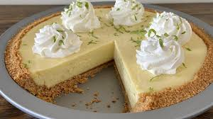

Key Lime Pie
Back to Homepage

Description
Key lime pie is a classic dessert that features a tangy, creamy lime filling set in a buttery graham cracker crust.
To make the crust, graham crackers are crushed into fine crumbs and mixed with melted butter and a bit of sugar, then pressed
firmly into a pie dish and baked until golden. The filling is made by whisking together sweetened condensed milk, fresh key lime juice, and egg
yolks, creating a smooth, rich mixture. The filling is then poured into the baked crust and returned to the oven to bake until just set.
Once the pie is baked and cooled, it is typically topped with a generous layer of whipped cream or meringue, adding a light and fluffy contrast
to the tart lime filling. Key lime zest is often sprinkled on top for added flavor and a pop of color. The pie is then chilled to allow the flavors to
meld and the filling to firm up. When served, key lime pie offers a refreshing balance of sweetness and citrusy tartness, with the buttery crust providing
a perfect base for the vibrant filling.
Ingredients
- 1 1/2 cups graham cracker crumbs
- 1/4 cup granulated sugar
- 1/2 cup melted butter
- 4 large egg yolks
- 1 can (14 oz) sweetened condensed milk
- 1/2 cup fresh key lime juice (or regular lime juice)
- 1 tablespoon lime zest
- Whipped cream (for topping)
Steps
- Preheat the oven to 350°F (175°C).
- In a medium bowl, mix the graham cracker crumbs, sugar, and melted butter until combined.
- Press the crumb mixture firmly into the bottom and sides of a 9-inch pie dish to form the crust.
- Bake the crust for 8-10 minutes, then let it cool slightly.
- In a large bowl, whisk the egg yolks until smooth.
- Add the sweetened condensed milk and whisk until fully combined.
- Stir in the fresh key lime juice and lime zest, mixing until the filling is smooth.
- Pour the filling into the cooled crust and spread evenly.
- Bake the pie for 15-20 minutes, or until the filling is just set.
- Let the pie cool to room temperature, then refrigerate for at least 2 hours to chill.
- Before serving, top with whipped cream and garnish with additional lime zest, if desired.